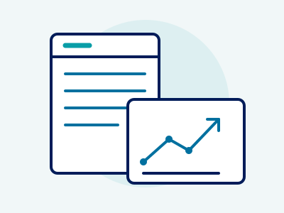

社長の判断を、いちばん近くで。
小さな会社に、
続けられる小さな仕組みを。
「数字の全体像が見えない」「資金繰りの不安が消えない」
難しい専門用語は使いません。経理・財務からDXまで、まるっと伴走します。
こんなお悩み、抱えていませんか？
経理が属人化していて全体像が見えない
担当者しかやり方が分からず、今の会社の数字がリアルタイムで把握できていない。
資金繰りが感覚頼みで3ヶ月先が不安
通帳残高を気にする毎日。来月の支払いや設備投資の予測が立てづらい。
社内にバックオフィスの相談相手がいない
税理士さんには聞きづらいちょっとした疑問や、労務・ITの悩みを抱え込んでいる。
「まるっとバックオフィス」が選ばれる4つの理由
13週先読みの資金繰り支援
3ヶ月先の現金出納を可視化。感覚に頼らない着実な経営計画をサポートします。
無理のない経理クラウド化
社内の誰もが扱える小さな仕組みから導入。現場に負担をかけないDXを進めます。
バックオフィスをまるごと体制化
財務だけでなく、総務・法務・ITまで。多角的な視点でワンストップ対応します。
同じ目線で寄り添う伴走型
「上から教える専門家」ではありません。社長の隣で一緒に手を動かします。
ご提供サービス（3つの柱）

1. ハンズオン財務・経営伴走
現状の試算表の整理から始まり、13週先までの資金繰り表を作成・運用。数字を「見る」から「使う」状態へステップアップします。
- 13週先読み資金繰り表の作成と毎月のモニタリング
- 月次決算の早期化と経営ダッシュボードの構築
- 銀行交渉・融資用資料作成のアドバイス
2. バックオフィスの仕組み化（DX）
紙やExcelで溢れた業務を整理し、クラウド会計・給与計算ツール等を導入。属人化をなくし、誰でも回せる状態を作ります。
- マネーフォワード・マネーフォワード等のクラウド会計導入
- 請求書発行・経費精算のペーパーレス化
- マニュアル作成と社内スタッフへの引き継ぎ教育
3. 総務・法務・ITの全方位支援
バックオフィスのお悩みを何でも受け止める窓口に。必要に応じて専門家（社労士・司法書士等）との橋渡しもスムーズに行います。
- 雇用契約や規程類のチェック・整備サポート
- 社内ITツール（Slack/Google Workspace等）の導入・環境設定
- 日常的な相談対応（チャット・面談）
「仕組みは、小さく始める」
それが私が現場で学んだ答えです。
代表取締役 / USCPA 内田 妥与（Uchida Yasuyo）
米国監査法人、外資系企業管理本部長、IT企業CFO・子会社代表等を経て、2026年3月にまるや株式会社を創立。中小企業に寄り添う伴走支援を行なう。
ご支援の流れ（4ステップ）
初回無料相談
まずはWEBフォームかLINEにてお気軽にお悩みを教えてください。オンラインまたはご訪問で状況をお伺いします。
現状の「見える化」
現在の通帳、試算表、業務フローを一緒に確認し、どこに課題やボトルネックがあるか整理します。
プランのご提案
無理のない「小さな仕組みづくり」から始める伴走計画と、明確なお見積りをご提示します。
伴走サポート開始
実際の資金繰り表作成やクラウド導入など、現場に寄り添いながら定期的な対話と作業を進めます。
よくある質問
会社の規模（年商・従業員数）や支援範囲（資金繰り中心か、経理DXまで含むかなど）に合わせてお見積もりいたします。まずはお悩みを伺い、無理のないプランをご提案しますのでご安心ください。
はい、オンライン（ZoomやGoogle Meet）を活用して全国対応可能です。関西・関東・福岡エリアをはじめ、オンラインでの定例打ち合わせとチャットサポートでスムーズに伴走いたします。
基本的には資金繰りの安定や仕組み化が定着するまでの「半年〜1年単位」をおすすめしておりますが、課題に応じて柔軟に対応いたします。
「何から手をつければいいか分からない」という段階こそ、一番ご相談いただきたいタイミングです。散らかった状態を紐解くのが私たちの役割ですので、何も整っていなくても気軽にお声がけください。
無料相談・お問い合わせ
まずはお気軽にお悩みをお聞かせください。二つの方法からお選びいただけます。
WEB相談フォーム
会社概要
| 会社名 | まるや株式会社 |
|---|---|
| 創立 | 2026年3月 |
| 所在地 | 〒600-8047 京都市下京区大黒町227番地 第2キョートビル402 |
| 代表者 | 代表取締役 内田 妥与（USCPA） |
| 事業内容 | 中小企業向けバックオフィス支援「まるっとバックオフィス」 （ハンズオン財務・経営伴走 / バックオフィスDX / 総務・法務・情報システム支援） |